← 返回阅读库 · 原论文目录
论文讲解阅读文档 · 新模型 · v077
TokenLearner What Can 8 Learned Tokens Do for Images and vids[2106.11297]
视频时长 00:11:13；讲解文字 5,384 字符；提取讲解画面 37 张。按视频原顺序阅读，每段文字保留时间戳。
文字来自整段视频的自动语音转写，按自然停顿分段，并与 PPT / 论文页面 / 演示画面对齐。未将讲解压缩为摘要；术语、数字和口述公式请结合画面及原论文核对。 阅读稿已校正规范部分明确术语误识别；原始逐字稿和每处修改记录另行保留。
讲解画面为源视频截图（640×360），不是可编辑 PPT 文件。全片按每秒 2 帧扫描内容变化，逐步展开页保留；连续动画保留代表画面。清晰度受源视频限制。
下载完整资料包 · 含离线 HTML、PDF、Word、全部 PPT 画面和字幕。
原论文与材料
TokenLearner: What Can 8 Learned Tokens Do for Images and Videos? · 下载完整 PDF（16 页）
按时间阅读
00:00:00–00:00:46 · 画面 001
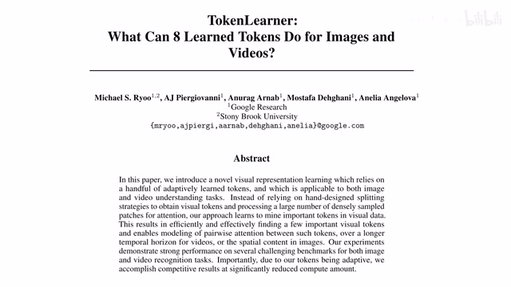
00:00:00–00:00:46 · 画面 001大家好,今天我们来快速介绍一篇论文 TokenLearner: What Can 8 Learned Tokens Do for Images and Videos?这篇论文首先你看到它有 token 说明这肯定是跟 transformer 相关了然后这个 token 前面还有一个定语 learn 说明我们不是说所有的 token 都扔进来我们是有一个学习的过程通过学习之后来得到我们需要的 token 当然我们看到这还是 8 个 token相比 Vision Transformer 那种 16x16 这样的 token 它的数量少很多所以你从标题就会看出来这篇论文是通过一种学习的手段来帮我们更加智能的选出一些重要的 token 希望这样能帮我们减少一些计算代价那么我们具体来看作者是怎么样实现的
00:00:46–00:01:34 · 画面 002
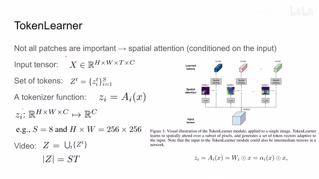
00:00:46–00:01:34 · 画面 002那么首先正如我们刚刚提到的在 vision transformer 里面比如说一张图像进来并不是说图像的所有的部分它都是有帮助的有些地方它就是背景可能我们就不需要关注它那么这里作者就说我设计了一种 spatial attention 的机制那么既然是 attention 它肯定是 conditioned on input 也就是说基于我们的输入我们对图像的各不同的部分有不同的 response 那么这个就是 attention 区别于 CNN 的核心的地方那么这里我们先介绍一下作者使用的标记你可以看到这个输入是 x 的话它是一个 tensor 它的高度宽度假如说它是一个视频它有这么一个 t 还有一个 channels 因为 x 它不一定是原始的图像或者视频它也可能是中间的一层 feature 所以说这是一个 channels
00:01:34–00:01:35 · 画面 003
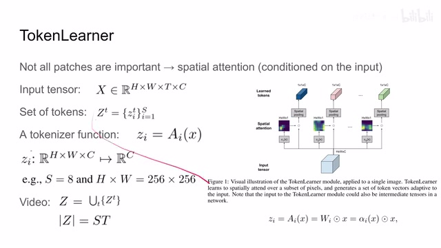
00:01:34–00:01:35 · 画面 00300:01:35–00:03:14 · 画面 004
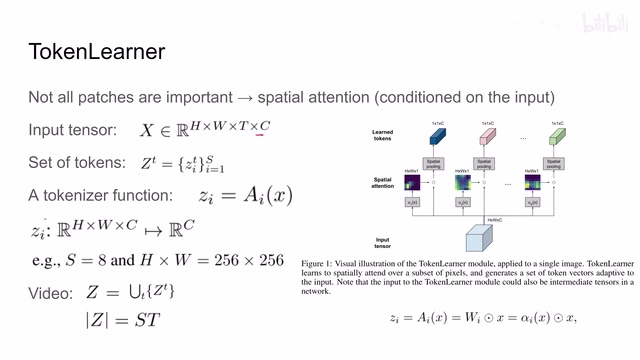
00:01:35–00:03:14 · 画面 004然后我们在 x 上面能提出一堆 tokens 那么对于小 t 时刻的 s 来说我们提出 ask 这样的 tokens 那么它这些 tokens 组成的集合我们叫它 capital t z 这个就是我一幅图像提出来的所有 token 那么具体怎么提这里作者设计了一个 attention 的机制我们叫它 a 首先它的输入是一幅图像乘以它的 feature 然后变成了一个 1 乘 1 乘以 c 的这样一个 vector那么这个 attention 到底是怎么运作的呢我们来看到这边我们可以看到呢这里有 s 个不同的网络那么它的作用呢就是从这个输入里面提出一个 attention map 那么对应的呢就是公式的这里那现在呢我们一共有 s 个这样的这个 spatial attention 那么我们把每一个 attention map 呢和我们的这个输入的 tensor 每一个 channel 上的对应的元素相乘那么这样子呢我们就能够得到一个尺寸和输入的 tensor 一样的
这样一个 tensor 它应该在这个位置然后呢这里做了一个 spatial pooling 也就是说呢我每一个 channel 这个 h 乘 w 个元素嘛我把它求一个平均值求出来的这个值呢就是作为这个 channel 的代表那么一共有 c 个 channel 每个 channel 呢都有一个值所以呢经过这个 pooling 之后原来是 h 乘 w 乘以 c 个这样的一个 tensor 它就变成了 1 乘 1 乘 c 个这样一个 vector 那么当然呢因为我这里有 s 个不同的 head 嘛
也就是 ask spatial attention 所以最后我们就学到了 ask tokens 每个 token 就是 1x1xc 而这个 token 的数量是远小于我们做 linear projection 数量比如说这里我一个 256x256 的图像我只提出 8 个 token 来那么你可以看到这个就是作者的本意了也就是说通过 spatial attention 把我们需要重点关注的位置给它找出来
00:03:14–00:03:15 · 画面 005
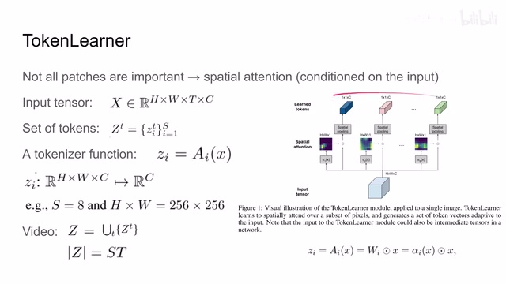
00:03:14–00:03:15 · 画面 00500:03:15–00:04:12 · 画面 006
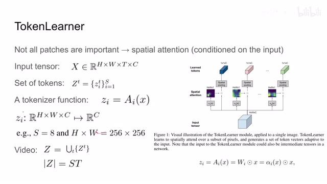
00:03:15–00:04:12 · 画面 006那么当然呢以上呢这些都是对于单独的一帧的图像你可以很简单的就把它扩展到一个视频序列假如说这个视频序列中呢有大 T 一个这样的图像那么你把这些所有的 token 呢都给它并起来得到这个 token 的集合呢它就是 S 个 token 乘以 T 个帧就是这样的一个尺寸区别于普通的 transformer 输入多少个 token 它输出就是多少个 token 输入多大的 tensor 它输出呢就是多大的 tensor这个 token tensor 你完全可以通过这个 reshape 重新排布一下这些 token 的位置来给它变换。这个 token learner 是把一个大的这个 tensor 或者说大的 tokens 来变换成一个非常小的数量的一个 tokens。所以你可以把它理解为这是 transformer 里面的一个 bottleneck。那么谈到这里其实就是本文最核心的贡献。这个 token learner 你可以用它把一个图像转换成数量相对较少的 tokens，然后把这些 tokens 送到我们标准的 transformer 里面就可以了。
00:04:12–00:04:14 · 画面 007
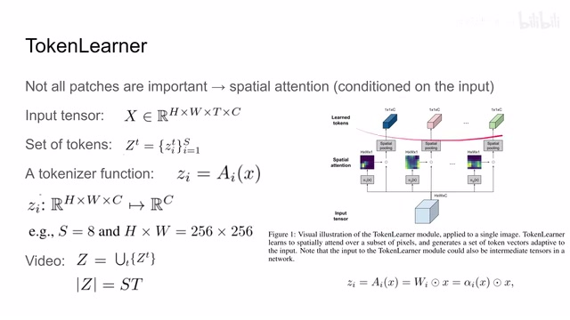
00:04:12–00:04:14 · 画面 00700:04:14–00:04:49 · 画面 008
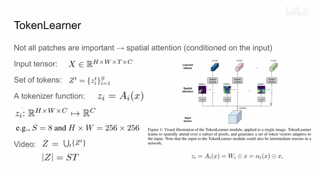
00:04:14–00:04:49 · 画面 008当然你的视频也可以这么操作。因为你每一帧的图像产生的 token 的数量相比原来少很多。所以你多加几帧这个 token 的数量也不会变得很多。这样在后面直接送进 transformer 里面是一个可以接受的解决方案。但是针对这个 video 我们作者说我还可以进行进一步的优化。那么这里作者就在这个 token learner 的基础上建了一个 vector transformer 还有这个 token fuser。
00:04:49–00:04:50 · 画面 009
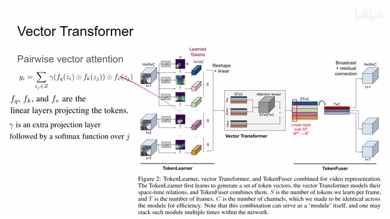
00:04:49–00:04:50 · 画面 00900:04:50–00:04:53 · 画面 010
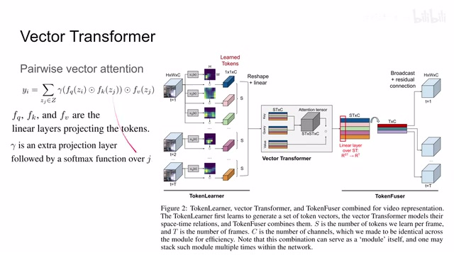
00:04:50–00:04:53 · 画面 01000:04:53–00:05:01 · 画面 011
00:04:53–00:05:01 · 画面 011那么下面呢我们就具体来看新增加的这两个模块是什么东西。首先是这个 vector transformer。它呢其实就是一个 pairwise vector attention。原理非常简单。其实你用这么一个公式就可以看到了。首先呢是我们的这些 token，你可以看到呢我们的 TokenLearner 里面有 ask 这个 1 乘 1 乘 c 的 token。那么一共有 t 符图像那就是 t 乘 ask 这个长度为 c 的这么一个 vector。那它的形式呢就是长这个样子。
00:05:01–00:05:07 · 画面 012
00:05:01–00:05:07 · 画面 01200:05:07–00:05:48 · 画面 013
00:05:07–00:05:48 · 画面 013那么根据我们之前的标记每一个小的 token 呢我们叫他的 z。然后因为我们是要做 attention 所以呢就要把我们的这个 token 呢送到 query network 还有这个 key network 里面。这些呢都是 mlp。然后呢同时呢还有一只呢要送到我们的 value network 里面。那么我们可以看到对于任何一个 tokenzi 等于 attention 的这一部分乘上这个 zj 的 value。然后呢对所有的所有的这个 token 呢就合。
00:05:48–00:06:31 · 画面 014
00:05:48–00:06:31 · 画面 014但是如果你仔细一看呢它里面的操作跟我们普通的这种 Dot 的 Attention 呢还不太一样。那么具体我们来看首先呢是把我们的输入的这个 Token 两个 Token 分别投到这个 Query 和 Key。那注意呢这个 Token 的长度虽然是 C 但是你做这个投影之后经过这个 Function Q 和这个 Function K 之后呢它的长度呢可以是其他任何的长度。那比如说呢这里我们的长度是 D 它的长度是 D。
那么两个长度为低的 vector 它对应元素相乘。那乘出来得到的是一个长度为低的 vector。那么这个长度为低的 vector 呢经过我们这个 gama 把它重新投回我们长度为 c 的这样一个 vector。那么这样得到一个 attention 的 vector 呢它跟我们这边的这个 value 在做这个对应元素的相乘。那它也是个长度为 c 的这么一个 vector。
00:06:31–00:06:37 · 画面 015
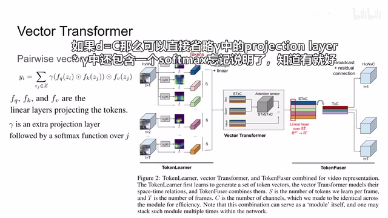
00:06:31–00:06:37 · 画面 01500:06:37–00:06:57 · 画面 016
00:06:37–00:06:57 · 画面 016那么最后呢我们这一部分求出来就是一个长度为 c 的 vector。那么一共有 st 的 token 嘛。那么这样子就相当于是 st 一个长度为 c 的 vector 给它求和得到我们的一个 vi。那么一共我们要产生 st 个 vi。
00:06:57–00:06:58 · 画面 017
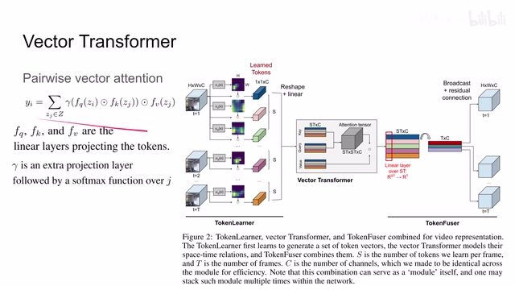
00:06:57–00:06:58 · 画面 017所以可以看到呢这个 attention tensor 呢是一个 st 乘 st 乘以 c。也就是说相当于对每一个 channel 我们都做了一次 attention。这个呢就是区别于普通的这个 dot product 这样的 attention。那假如说你是一个点击的方式的话那你这里直接是 st 乘 st 就可以了。
00:06:58–00:07:22 · 画面 018
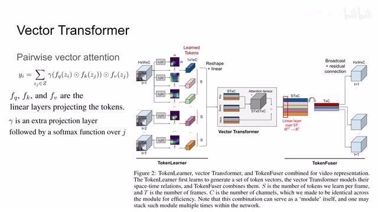
00:06:58–00:07:22 · 画面 018那么下来呢我们再往下看就是到了这个 token fuser 我们这个 vector transformer 出来之后呢它还是一个 st 乘 c 这样的一些 token 这里呢作者用了个 mlp 但是呢它是 overst 的也就是说呢我每一个 channel 里面选取出 st 的元素就是一个长度为 st 的 vector 送进我们的 mlp 里面然后呢得出一个长度为 t 的 vector 那对于每一个 channel 呢都这么做一次
00:07:22–00:07:54 · 画面 019
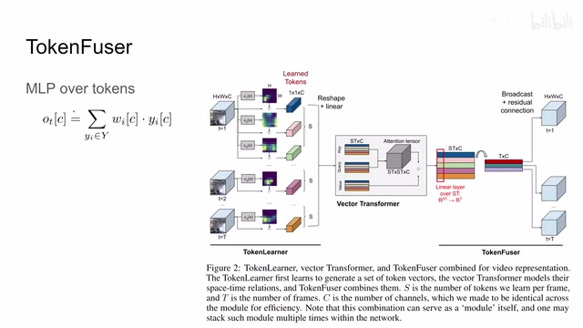
00:07:22–00:07:54 · 画面 019那么就是得到一个 t 乘 c 的这样一个 tensor 那么有了这样的一个 tensor 之后呢你再把它扩充到这个 h 乘 w 乘以 t 乘 c 那相当于每一针的每个 channel 呢你都给它分别加上了一个偏置那么最后呢还有一个 residual connection 就是你从前面一开始啊给它 skip connection 过来连到这里来那这个呢就是 token fuser 那么其实到这里呢你如果结合这个 vector transformer 还有 token fuser 呢你可以发现它其实很像 mlp mixer
00:07:54–00:07:55 · 画面 020
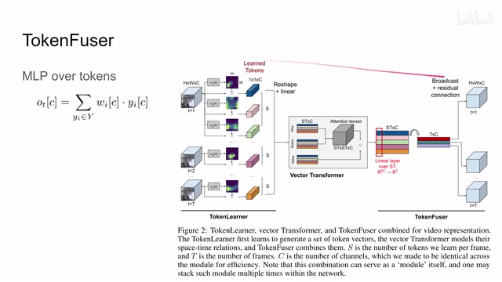
00:07:54–00:07:55 · 画面 02000:07:55–00:08:22 · 画面 021
00:07:55–00:08:22 · 画面 021那在这个 VectorTransformer 里面呢它是做这个 ChannelWise 的这个 SelfAttention 而到这个 TokenFuser 里面呢它相当于把这个 Channel 呢给它 Transpose 了一下这样子呢你就是做了一个 TokenWise 的这个 SelfAttention 同时呢整个这一个模块它是一个沙漏型的结构从我们的 TokenLearner 开始一直就是给我们增加 Bottleneck 一直到这里把所有的信息呢都压成了一个 TxC 的这样一个 Tensor 然后呢再通过 Broadcast 来给它复制成原来大小的尺寸
00:08:22–00:08:24 · 画面 022
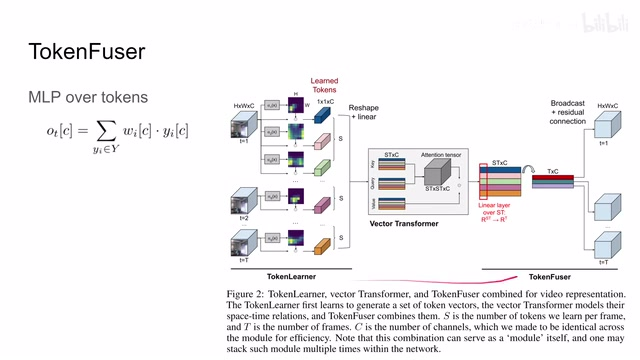
00:08:22–00:08:24 · 画面 02200:08:24–00:08:37 · 画面 023
00:08:24–00:08:37 · 画面 023那么这样一整个模块呢虽然它的输入和输出的尺寸是一样的但是呢里面它明显的有这么一个压缩信息的环节好的那么以上呢就是本文最核心的这个网络模块的贡献那么下面我们就来看基于这些乱七八糟的模块作者给我们整出哪些花里扑梢的网络结构吧那么首先是我们的图像的分类任务可以看到呢这里呢作者用了这个 Vision Transformer 的结构只不过呢把中间的一层 Transformer 给替换成这个 TokenLearner
00:08:37–00:08:38 · 画面 024
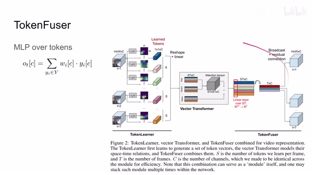
00:08:37–00:08:38 · 画面 02400:08:38–00:08:55 · 画面 025
00:08:38–00:08:55 · 画面 02500:08:55–00:09:49 · 画面 026
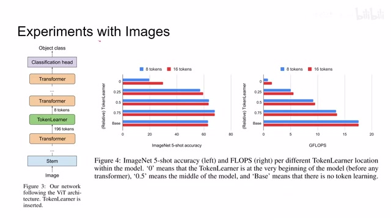
00:08:55–00:09:49 · 画面 026这样子呢你看原来有 196 个 token 瞬间就变成了 8 个 token 但是我们应该在哪里放这个 TokenLearner 呢这里呢作者帮我们测试了这个是从一开始的位置放还是接近最后的位置放那发现呢相对靠后方好一点这个当然也是符合我们的直觉的因为越往后随着我们网络层次的增加它的这个信息呢是越来越抽象越来越 high level 的这么一个信息那么这个时候呢你压缩网络的结构是可以保留我们有用的信息的但是在前面我们还是需要依赖这些 low level 的这些 feature 当然作者也试验了使用 8 个 token 还是 16 个 token 看到改进并不是很明显特别是在这里这也在侧面告诉我们其实到网络结构到层次很高之后它要传递的信息并没有真的这么多了那么最终作者就选了 8 个 token 的这样一个配置那么这里是 ImageNet 显然同等算力之下本文的模型要比原来的 Vision Transformer 效果更好
00:09:49–00:09:50 · 画面 027
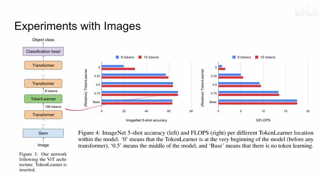
00:09:49–00:09:50 · 画面 02700:09:50–00:09:57 · 画面 028
00:09:50–00:09:57 · 画面 02800:09:57–00:10:07 · 画面 029
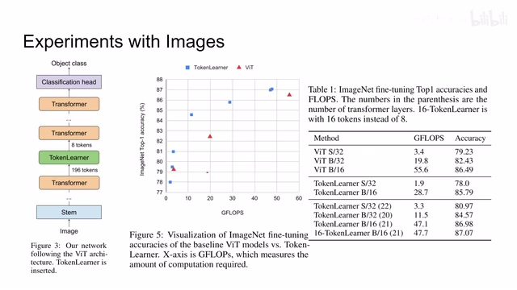
00:09:57–00:10:07 · 画面 029那么重点其实是我们来看到 v6 相关的助理这里做着根据我们之前 token learnervector transformer 和 token fuser 这样一个模块然后再加了一些 1x1 的 convolution 其实就是 channel-wise MLP 然后你就把这种模块重复重复就可以了这里是使用了 x3d 的 backbone 汇报了一些结果显然本人方法要有提升的当然支持很少一部分实验做着还有更多的 ablation 等相关的实验细节
00:10:07–00:10:25 · 画面 030
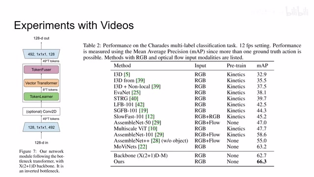
00:10:07–00:10:25 · 画面 03000:10:25–00:10:28 · 画面 031
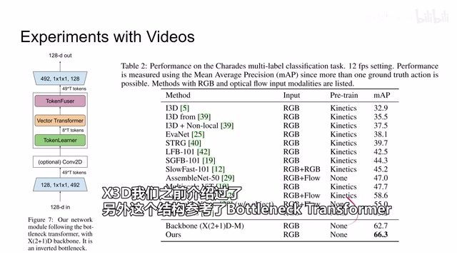
00:10:25–00:10:28 · 画面 03100:10:28–00:10:35 · 画面 032
00:10:28–00:10:35 · 画面 032非常推荐你去源文查看，那么总的来说呢，本来就是在传统的一个类似 transformer 基础上，就是 vector transformer 加 token fuser，其实它就跟我们经典的 transformer 很像啊，在它前面之前加了一个这个 spatial attention，这个 spatial attention 呢，帮我们把大的 token 的数量呢，给它缩减到很小的一个 token 的数量，那么这样一个模块呢，就整个形成了一个带 bottleneck 的 transformer 的模块
00:10:35–00:10:40 · 画面 033
00:10:35–00:10:40 · 画面 03300:10:40–00:10:43 · 画面 034
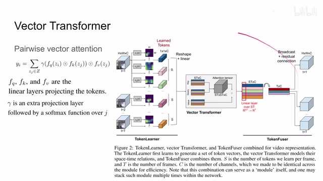
00:10:40–00:10:43 · 画面 03400:10:43–00:10:52 · 画面 035
00:10:43–00:10:52 · 画面 03500:10:52–00:11:13 · 画面 036
00:10:52–00:11:13 · 画面 036希望用它尽量优雅的解决我们 Transformer 一路 token 下来尺寸不好变这么一个问题，总的来说还是有点意思的一篇文章，以上就是我对这篇论文的简单的一个分析，感谢您的收看，再见
00:11:13–00:11:13 · 画面 037
00:11:13–00:11:13 · 画面 037转写与来源说明 · 0 个自动复核提示
保留 26 个原始语音片段，0 个片段触发自动复核提示。提示仅用于定位可能的术语、重复或识别问题，不等于已确认错误。
讲解画面为源视频截图（640×360），不是可编辑 PPT 文件。全片按每秒 2 帧扫描内容变化，逐步展开页保留；连续动画保留代表画面。清晰度受源视频限制。
原视频：paper/合集_2026-10-16_新模型/[论文简析]TokenLearner What Can 8 Learned Tokens Do for Images and vids[2106.11297].mp4
SHA-256：23c7b737a0b7375e88d12080edd7baf3c663703e6bdef2d0c3a4b2ac7bd10fa8
全文按视频语音与画面制作。原论文可从上方链接下载；完整资料包保留全文、原始逐字稿、字幕和校对记录。